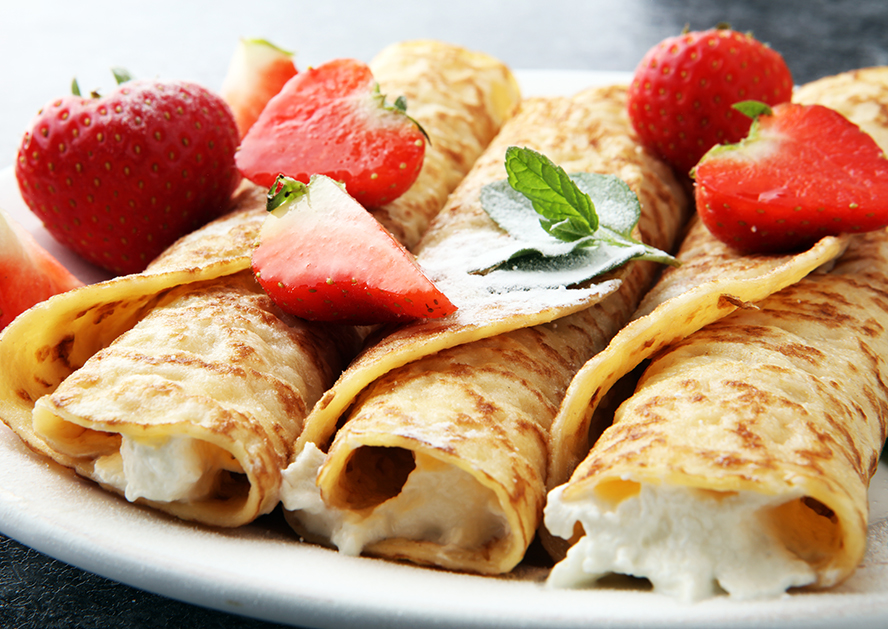

What is the Crepe?

A crêpe or crepe is a dish made from unleavened batter or dough that is cooked on a frying pan or
a griddle.
Crêpes are usually one of two varieties:
sweet crêpes or savoury galettes.
They are often served with a wide variety of fillings such as cheese, fruit, vegetables, meats, and a variety of
spreads.
How did the Crepe come to be
The history of crêpes dates back to 13th century Brittany, France.
It seems a housewife there accidentally dribbled some thin porridge onto a hot,
flat cooktop. Since people back then weren't inclined to waste even the smallest cooking mistakes, she ate it, the rest, as they say, is history.

Ingredients
- Milk: 2 Cups
- Eggs: 4, all large
- Unsalted Butter: 3 Tablespoons, melted and slightly cooled
- Granulated Sugar: 1 Tablespoon
- Vanilla extract: 1 teaspoon
- Salt: 1/2 teaspoon
- Flour: 1 1/2 cups, all purpose
- Depending on what you want for serving: berries, syrup, bananas, nutella
How to make the Crepe
- In a blender, blend milk, eggs, butter, sugar, vanilla, salt, and flour 15 to 20 seconds, or until batter is smooth. You could also whisk in a bowl. Refrigerate at least 30 minutes, or overnight.
- Heat an 8-inch frying pan over medium-low heat. Pour about 1/4 cup batter into the pan, tilting pan immediately from side to side to form an even circle. Cook about 1 minute per side, or until lightly browned. Remove from heat and stack until ready to serve. Repeat with remaining batter.
- Serve with your favorite toppings. Fresh fruit, jams, pudding, nutella, whipped topping and nuts are a few of our favorites.
All done